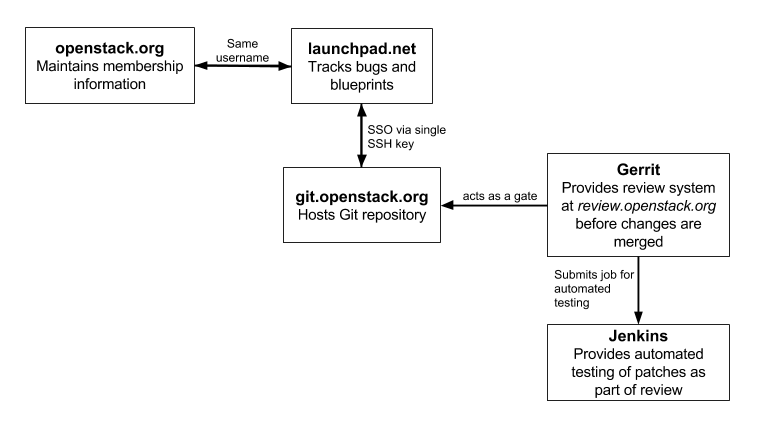

First timers¶
One of the best ways to start contributing to OpenStack documentation is to walk through the Installation Tutorial and complete it by hand. Keep notes as you go, and offer suggestions for improvement by filing documentation bugs at Launchpad.
The following diagram shows the basic setup workflow:
Setting up for contribution¶
To get started, complete the following steps:
- Set up your account and agree to the
Individual Contributor License Agreement (ICLA). See Account Setup for details.
To set up your environment for contributions, proceed with the subsections below.
Set up a text editor¶
Use any text editor of your choice to work with the documentation. For example:
- https://wiki.gnome.org/Apps/Gedit
- https://wiki.typo3.org/Editors_%28reST%29#Open_source_.28.3D_free_of_cost.29
To keep the documents clean and easy to compare, all of the OpenStack projects require that text is wrapped at 79 characters maximum, with no white spaces at the end of the line.
You can configure the text editor to do that automatically.
For example, in the .vimrc:
set list
set listchars=tab:>-,trail:-,extends:#,nbsp:-
set modeline
set tw=78
set tabstop=8 expandtab shiftwidth=4 softtabstop=4
Set up git and git-review¶
Install
git. See GitHub help for details.If you use Windows to contribute to OpenStack, install Git for Windows. In the subsequent procedures, run commands from the Git Bash console.
Install
git-reviewso that you are able to submit patches. See Installing git-review for details.Note
If you use Windows to contribute to OpenStack, install Python as prerequisites. As part of the Python installation, be sure to install setuptools and pip as instructed.
Set up SSH¶
On the computer which you commit from, generate an SSH key:
$ ssh-keygen –t rsaOptionally, enter a password. If you enter one, remember it because you must enter it every time you commit.
View and copy your SSH key:
Linux/Mac
$ less ~/.ssh/id_rsa.pubWindows
$ notepad ~/.ssh/id_rsa.pubSign into gerrit at https://review.openstack.org/.
In the upper right, click your username. Click the Settings > SSH Public Keys page. Click
Add Key. Paste the key in theAdd SSH Public Keyweb form and clickAdd.
Set up a repository¶
For the instructions on how to set up a repository so that you can work on it locally, refer to the Starting Work on a New Project of the Infrastructure manual.
Note
Substitute <projectname> in the examples included in this section
with openstack-manuals as the documentation is mostly stored in
the openstack-manuals repository. However, if you need specific
guide sources, refer to openstack/api-site,
openstack/security-guide, or openstack/training-guides
repository.
See Troubleshooting your setup if you have difficulty with a repository setup.
Finding a bug¶
After setting up your environment for contribution, it is time to find something to work on:
- Go to the bug lists at https://bugs.launchpad.net/openstack-manuals/+bugs.
- Find a bug that has been confirmed by another contributor and assign it to yourself.
Committing a change¶
Update the repository and create a new topic branch as described in the Starting a Change section of the Infrastructure manual.
Fix the bug in the docs.
Read the Writing style section, also pay attention to the RST formatting conventions section.
Create your commit message. See Committing a change for details.
Create a patch for review.openstack.org following the Submitting a Change for Review instructions.
Follow the URL returned from
git-reviewto check your commit:https://review.openstack.org/<COMMIT-NUMBER>
Celebrate and wait for reviews!
Responding to requests¶
After you submit a patch, reviewers may ask you to make changes before they approve the patch.
To submit changes to your patch, proceed with the following steps:
Copy the commit number from the review.openstack.org URL.
At the command line, change into your local copy of the repository.
Check out the patch:
$ git review -d <COMMIT-NUMBER>Make your edits.
Commit the changes using the amend flag:
$ git commit -a --amendEnsure that the Change-ID line remains intact in your commit message. This prevents Gerrit from creating a new patch.
Push the changes to review as described in the Updating a Change section of the Infrastructure manual.
Wait for more reviews.
Troubleshooting your setup¶
git and git review¶
Authenticity error.
The first time that you run git review, you might see this error:
The authenticity of host '[review.openstack.org]:29418 ([198.101.231.251]:29418) can't be established.
Type yes (all three letters) at the prompt.
Gerrit connection error.
When you connect to gerrit for the first time, you might see this error:
Could not connect to gerrit. Enter your gerrit username:
Enter the user name that matches the user name in the Settings page at review.openstack.org.
Not a git repository error.
If you see this error:
fatal: Not a git repository (or any of the parent directories): .git You are not in a directory that is a git repository: A .git file was not found.
Change into your local copy of the repository and re-run the command.
Gerrit location unknown error.
If you see this error:
We don't know where your gerrit is. Please manually create a remote named "gerrit" and try again.
You need to make a git remote that maps to the review.openstack.org ssh port for your repo. For example, for a user with the
username_exampleusername and the openstack-manuals repo, you should run this command:git remote add gerrit ssh://username_example@review.openstack.org:29418/openstack/openstack-manuals.git
Remote rejected error.
If you see this error:
! [remote rejected] HEAD -> refs/publish/master/addopenstackdocstheme (missing Change-Id in commit message footer)
The first time you set up a gerrit remote and try to create a patch for review.openstack.org, you may see this message because the tool needs one more edit of your commit message in order to automatically insert the Change-Id. When this happens, run
git commit -a --amend, save the commit message and rungit review -vagain.Permission denied error.
If you see this error:
Permission denied (publickey).Double check the Settings page at https://review.openstack.org to make sure your public key on the computer or virtual server has been copied to SSH public keys on https://review.openstack.org/#/settings/ssh-keys. If you have not adjusted your
.sshconfiguration, your system may not be connecting using the correct key for gerrit.List your local public key on Mac or Linux with:
less ~/.ssh/id_rsa.pubOn Windows, look for it in the same location.
Network¶
If your network connection is weak, you might see this error:
Read from socket failed: Connection reset by peer
Try again when your network connection improves.
Accessing gerrit over HTTP/HTTPS
If you suspect that SSH over non-standards ports might be blocked or need to access the web using http/https, you can configure git-review to use an http endpoint instead of ssh as explained in the Infrastructure Manual.
Python¶
If you see this error:
/usr/bin/env: python: No such file or directory
Your Python environment is not set up correctly. See the Python documentation for your operating system.
i18n¶
If you see this error:
$ git review -s
Problems encountered installing commit-msg hook
The following command failed with exit code 1
"scp :hooks/commit-msg .git/hooks/commit-msg"
-----------------------
.git/hooks/commit-msg: No such file or directory
-----------------------
You may have a LANGUAGE variable setup to something else than C. Try using instead:
$ LANG=C LANGUAGE=C git review -s

Except where otherwise noted, this document is licensed under Creative Commons Attribution 3.0 License. See all OpenStack Legal Documents.